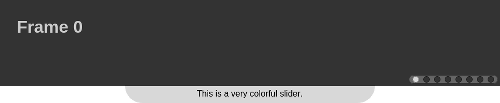
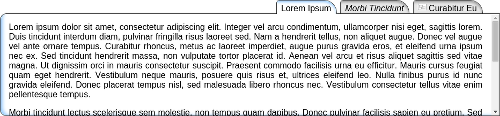

-

Lectern.Slider
Simple, highly customizable, slider elements.
-
Lectern.Source
Limited in utility, but very handy when the time is right. Adds SourceView elements to pages to show the markup, inline styles, and inline scripts of your choice, from the live page. Used extensively in these demo pages.
-

Lectern.Tabs
Easily add TabView elements to a page to condense sprawling content and make it more navigable. Used extensively in these demo pages.